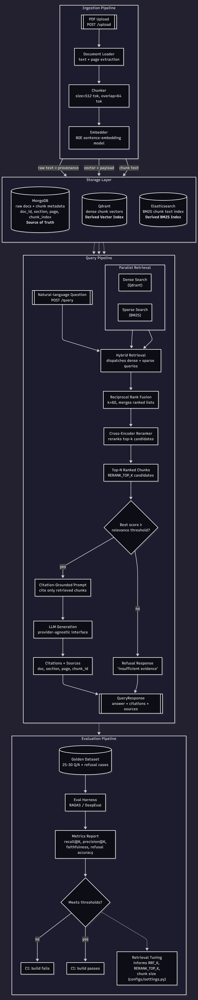

Technical Architecture Document
A legal contract & case-law RAG platform — hybrid retrieval, cross-encoder reranking, citation-grounded refusal-aware generation, with quality enforced as a CI gate.
docs/01-requirements.md §7) — including the two criteria the system currently fails, stated plainly rather than rounded up to "done."
Section 1
LexRAG ingests PDF contracts and case-law documents, chunks and embeds them, and fans the write out in parallel to three stores: MongoDB (document metadata and provenance), Qdrant (dense vector search), and Elasticsearch (BM25 keyword search). A query runs dense and keyword retrieval in parallel, fuses the results with Reciprocal Rank Fusion, reranks the fused candidates with a cross-encoder, then generates a citation-grounded answer — or refuses, if the retrieved evidence doesn't support one.
Retrieval and generation quality are measured against a 30-case golden dataset and enforced as a CI quality gate (FR-12), not tuned by eyeballing outputs.
status: ready until every write is validated▼
retrieval/fusion/)document_ids filter scopes retrieval to specific documents via native store filters▼
bge-reranker-v2-m3) reranks fused candidatesRERANK_INPUT_TOP_K caps candidates entering the reranker — the dominant latency cost▼
▼

docs/architecture.mmd.Section 2
Status is measured against the project's own documented thresholds (docs/01-requirements.md §7), not a general impression of completeness.
MET clears the documented threshold PARTIAL improved but not yet met NOT MET below threshold
| Capability | Owns | Status |
|---|---|---|
| PDF ingestion + chunking + provenance | ingestion/loaders/, ingestion/chunking/ | MET |
| Dual-write consistency (Mongo/Qdrant/ES) | ingestion/pipeline.py — not status: ready until every write is validated | MET |
| Duplicate detection (SHA-256) | ingestion/repository.py | MET |
| Hybrid retrieval (dense + BM25 + RRF) | retrieval/hybrid.py, retrieval/fusion/ | MET — Recall@10 = 1.00 (≥ 0.85), Precision@5 = 0.88 (≥ 0.70) |
| Cross-encoder reranking | retrieval/reranker/ — bge-reranker-v2-m3 | MET |
| Citation-grounded generation | generation/citations.py, generation/generator.py | MET — Faithfulness = 0.98 (≥ 0.90) |
| Negative-case refusal (100% target) | generation/prompts.py — LEGAL_RAG_V2 | NOT MET — 2 of 30 false acceptances remain |
| P95 query latency ≤ 6s (NFR-1) | Reranker is the dominant cost, CPU-bound | NOT MET — avg 26.3s, ~9x over budget |
| REST API (upload/query/documents) | api/routes/ | MET |
| Golden-dataset evaluation harness | evaluation/ — RAGAS + DeepEval | MET |
| CI evaluation quality gate (FR-12) | .github/workflows/ci.yml — evaluation-gate job | PARTIAL — real and wired, but manual-trigger + self-hosted only, not automatic on every push |
Lint/type/test CI (quality job) | Ruff, mypy, pytest — every push/PR | MET |
confidence field is not an answer-correctness score. domain.generation.GenerationResult.confidence is the cross-encoder's relevance score for the single highest-ranked retrieved chunk — the same score refusal (FR-10) gates on — not a calibrated measure of whether the generated answer is correct. A follow-up measurement (scripts/confidence_correlation.py) found Pearson r ≈ 0 between confidence and answer correctness/faithfulness across the golden dataset, including one answer that scored 0.92 while being completely unfaithful. This is documented, current behavior — treat confidence as "how relevant was the best single piece of evidence," and rely on the citations list to judge whether an answer is trustworthy.
api/ — HTTP concerns only; parses requests, calls into ingestion/retrieval/generation, shapes responsesingestion/ — PDF loading, chunking, the fan-out pipeline to all three storesretrieval/ — vector store, keyword store, RRF fusion, reranker, each behind an interfacegeneration/ — citation-grounded prompting, provider-agnostic LLM interface, refusal logicevaluation/ — golden-dataset runner + RAGAS/DeepEval metric wrappersconfigs/ — all settings flow through here; nothing else reads os.environ directlySection 3
Ingestion
POST /upload receives a PDF; its content hash is checked against existing documents — a byte-identical duplicate is skipped and the existing document returned.bge-m3).status: ready only once every store write is independently validated — a partial failure leaves it incomplete rather than falsely queryable.Query
POST /query accepts a question and an optional document_ids scope.RERANK_INPUT_TOP_K) are reranked by the cross-encoder.confidence field (see Section 2's callout on what it does and doesn't mean).POST /query → Hybrid Retrieval (Qdrant + Elasticsearch, parallel) → RRF Fusion → Cross-Encoder Rerank → Generation (cite or refuse) → JSON Response
Section 4
| Layer | Choice | Why |
|---|---|---|
| API | FastAPI | Async-first; I/O-bound store queries and LLM calls use async clients directly |
| Metadata / document store | MongoDB | Flexible schema for document metadata and provenance, independent of vector/keyword indexes |
| Vector store | Qdrant | Dense semantic retrieval; swappable behind a DI interface (Pinecone is a documented stretch goal) |
| Keyword index | Elasticsearch | BM25 keyword search — catches exact-term matches hybrid dense search alone can miss |
| Fusion | Reciprocal Rank Fusion | Combines dense + keyword rankings without needing score normalization across incompatible scales |
| Reranker | bge-reranker-v2-m3 (cross-encoder) | Refines fused candidates before generation; the dominant latency cost, so capped via RERANK_INPUT_TOP_K |
| Generation | OpenAI-compatible, provider-agnostic interface | Citation-grounded prompting isn't tied to one vendor's API shape |
| Evaluation | RAGAS + DeepEval | RAGAS supplies LLM-as-judge metrics; DeepEval wraps them in threshold/pass-fail assertions for CI |
| Package/env | uv | Fast, lockfile-based dependency management; uv.lock mismatch fails CI before any other check runs |
An ONNX Runtime backend for the same cross-encoder model was benchmarked as an alternative to the default PyTorch backend, specifically to address reranker latency (the pipeline's dominant cost). Measured result: 1.02x speedup — not a real improvement — so the added dependency and maintenance surface weren't adopted. Full write-up and numbers: docs/adr/001-reranker-onnx-backend.md. The latency win that did land came from a different lever: capping RERANK_INPUT_TOP_K (20 → 12), validated against the golden set with zero measured recall cost.
The two remaining negative-case false acceptances are not retrieval failures — both are cases where retrieval correctly returns real, topically-relevant evidence that doesn't actually contain the specific fact being asked about, and generation still answers instead of refusing. This is why the Day 6 fix (LEGAL_RAG_V2) targeted the generation prompt, not the retrieval or reranking stages.
Section 5
Ingestion writes to three independent stores (MongoDB, Qdrant, Elasticsearch) with no distributed transaction across them. A document is not marked status: ready in MongoDB until every store write is independently validated — so a partial failure (e.g. the Elasticsearch write fails after Qdrant succeeds) leaves the document in a non-ready state instead of silently becoming queryable with incomplete indexing.
Generation is instructed to answer only from retrieved passages and to refuse explicitly — not answer with lower confidence — when the evidence is insufficient or the question requires synthesis the retrieved evidence doesn't support. Refusal is a first-class response, not an exception; it's measured in the same evaluation harness as recall, precision, and faithfulness (see Section 7 of the Case Study).
Section 6
Unit tests never hit a real MongoDB/Qdrant/Elasticsearch/LLM — the client is mocked or faked at the interface boundary. Real-service tests live in tests/integration/ under the integration pytest marker and skip themselves when the dependency is unreachable. pytest with no flags must pass with zero external services running and finish in under 60 seconds (NFR-5).
| CI Job | Trigger | What it runs |
|---|---|---|
quality | Every push / PR | uv sync --locked, ruff check, ruff format --check, mypy, pytest |
evaluation-gate (FR-12) | Manual (workflow_dispatch), self-hosted runner | make evaluate + make evaluate-gate against the pre-seeded golden corpus |
The evaluation gate isn't automatic on every push because the golden corpus (data/raw/sample_contracts/) is real, licensed contract text, deliberately gitignored — a GitHub-hosted runner has no way to reproduce it from a checkout alone. The job itself is real, tested YAML, demonstrated both failing (against the pre-fix baseline and against deliberately emptied vector/keyword stores) and passing (against the real, correctly-configured system) — not aspirational configuration.
Section 7
Honest, measured gaps against docs/01-requirements.md §7's acceptance bar — not resolved this sprint, tracked here rather than glossed over.
| Limitation | Detail |
|---|---|
| 100% negative-case refusal not met | 2 of 30 golden cases are still answered when they should be refused — both generation-stage judgment failures on topically-real-but-non-answering evidence |
| P95 query latency not met | Cut 53% (56.4s → 26.3s avg), but the CPU-only cross-encoder reranker remains ~9x over the 6s budget; no GPU/DirectML path on the dev machine, and ONNX was measured and rejected |
| Evaluation gate not automated on GitHub-hosted runners | Real, correctly wired, but only runs on a self-hosted runner with the (deliberately gitignored, licensed) corpus pre-seeded, triggered manually |
| Retrieval robustness to config mistakes untested at scale | Only an artificially emptied vector/keyword store cleanly failed the CI gate's checks on this 8-document corpus; a larger, more heterogeneous corpus would be needed to demonstrate a naturally occurring regression |
| Single-run measurements throughout | RAGAS/DeepEval LLM-judge scores aren't perfectly deterministic run-to-run — a repeat run of an identical config previously shifted refusal accuracy from 93.33% to 100% |
Resources
Want to verify or explore this further? Here you go.